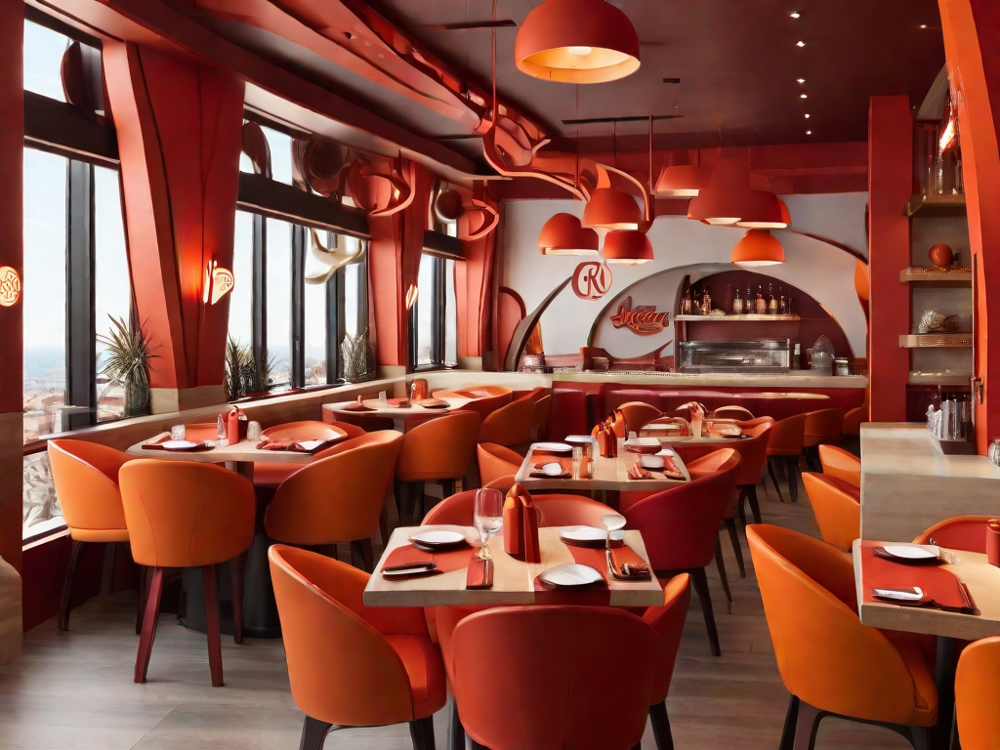
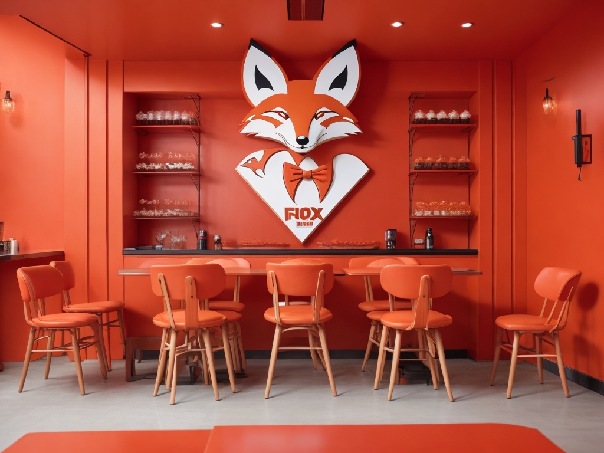

The Pepper Fox
Welcome to Pepper Fox, a cozy and charming restaurant that serves delicious dishes with a touch of spice. Pepper Fox is more than just a place to eat, it’s a place to experience the warmth and hospitality of the fox family.
At Pepper Fox, you can enjoy a variety of cuisines, from traditional local dishes to international favorites, all prepared with fresh and high-quality ingredients. Whether you are looking for a hearty breakfast, a satisfying lunch, or a romantic dinner, you will find something to suit your taste and mood at Pepper Fox.
Pepper Fox is also a place to have fun and relax, with a lively atmosphere that reflects the personality of the fox. You can admire the beautiful decor, featuring orange and red tones and a cute fox logo, while listening to some upbeat music. You can also join in the fun activities and events that Pepper Fox organizes regularly, such as trivia nights, karaoke nights, and live performances.
Pepper Fox is more than just a restaurant, it’s a community of friends and family who share a love for food and fun. Come and join us at Pepper Fox, where you will always feel welcome and happy. We look forward to seeing you soon!
Dining Lodge
If you are looking for a more casual and familiar dining experience, you can check out our main section, where we serve a range of normal foods that are sure to satisfy your appetite. Our main section offers a variety of dishes, from burgers and sandwiches to salads and soups, all made with fresh and quality ingredients. You can also choose from our selection of drinks, such as coffee, tea, juice, or soda, to complement your meal. Our main section is open for breakfast, lunch, and dinner, and you can enjoy your food in a comfortable and relaxed setting. Whether you want a quick bite or a leisurely meal, our main section is the perfect place for you.
Cafeteria
If you are looking for a more cozy and intimate dining experience, you can check out our cafeteria section, where we serve a range of snacks and desserts that are sure to delight your taste buds. Our cafeteria section offers a variety of treats, from cakes and cookies to ice cream and smoothies, all made with fresh and natural ingredients. You can also choose from our selection of hot and cold beverages, such as espresso, latte, cappuccino, or milkshake, to enjoy with your snack. Our cafeteria section is open for all day, and you can enjoy your treat in a warm and inviting setting. Whether you want a sweet indulgence or a refreshing break, our cafeteria section is the perfect place for you.

comments
“I had a great time at Pepper Fox. The food was delicious and the service was friendly. I loved the fox theme and the decor. It was a cozy and charming place to eat and have fun. I would definitely recommend it to anyone who is looking for a good restaurant in Mashhad.” Sara, TripAdvisor
“Pepper Fox is one of my favorite restaurants in Mashhad. The food is always fresh and tasty, and the portions are generous. The staff is attentive and helpful, and the atmosphere is lively and colorful. I especially enjoyed the trivia night and the karaoke night, they were so much fun. Pepper Fox is a must-visit for anyone who loves food and fun.” Ali, Google Reviews
“Pepper Fox is a gem of a restaurant in Mashhad. The food is amazing and the prices are reasonable. The menu has a lot of variety, from Iranian dishes to international dishes, and everything is cooked with a touch of spice. The desserts are also heavenly, I loved the ice cream and the smoothies. The restaurant has a fox theme, which is very cute and original. The music is upbeat and the events are entertaining. Pepper Fox is a great place to hang out with friends and family.” Maryam, Yelp